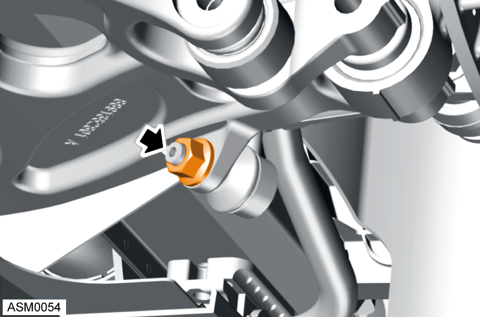
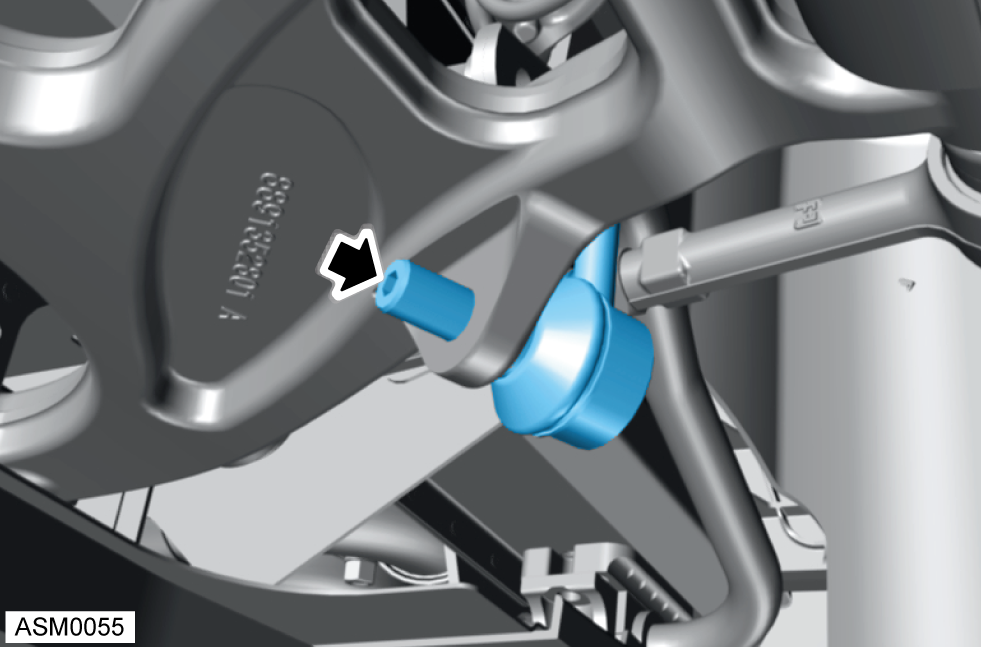
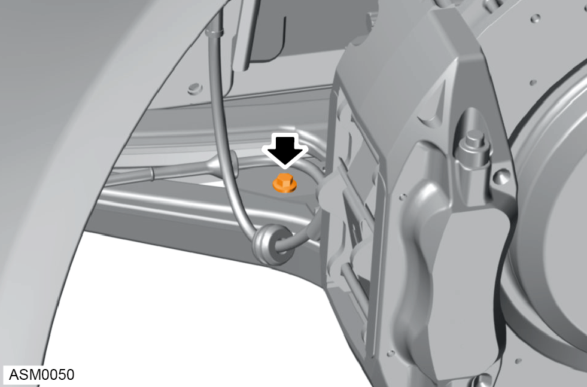
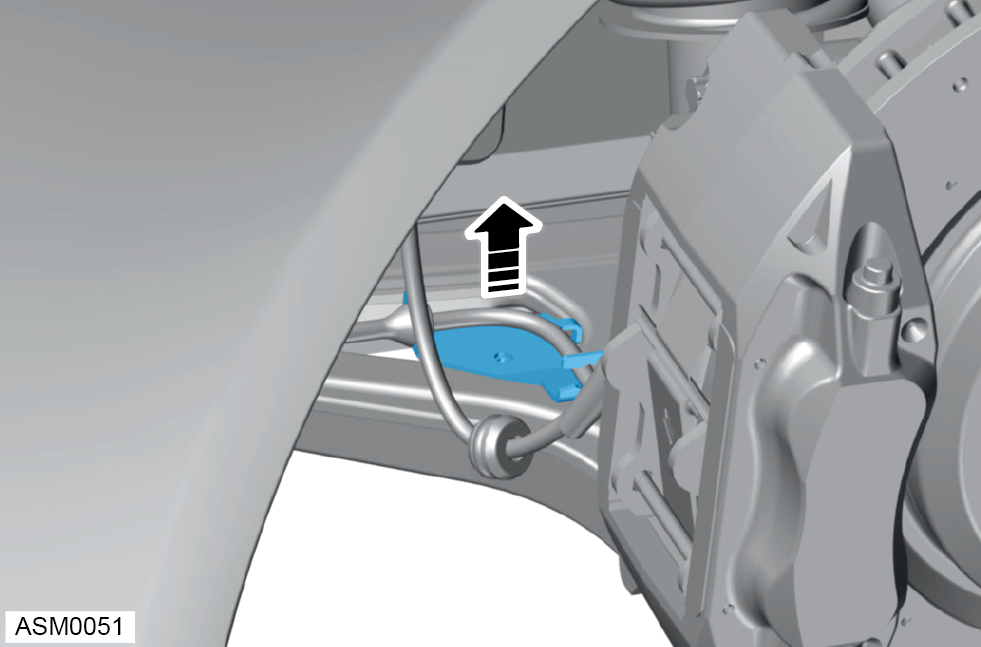
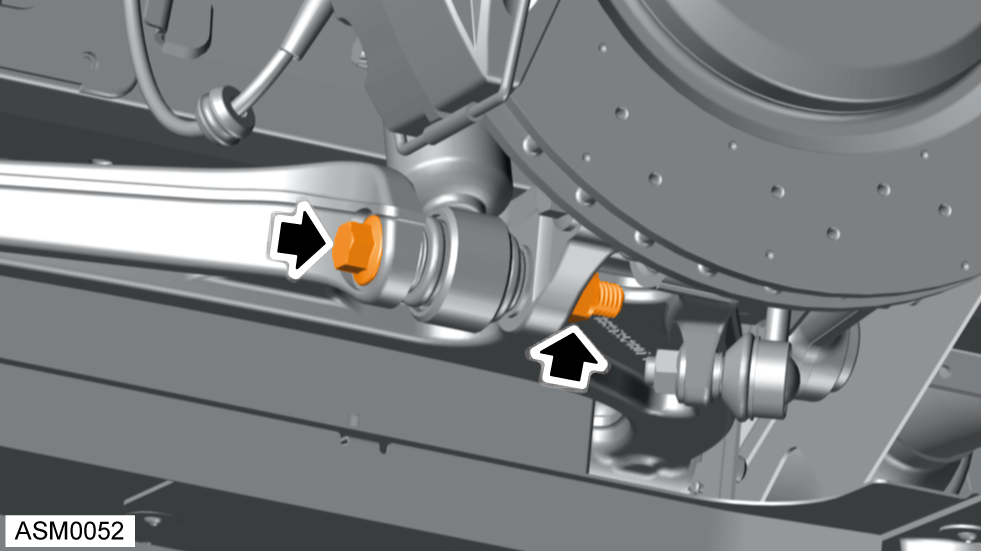
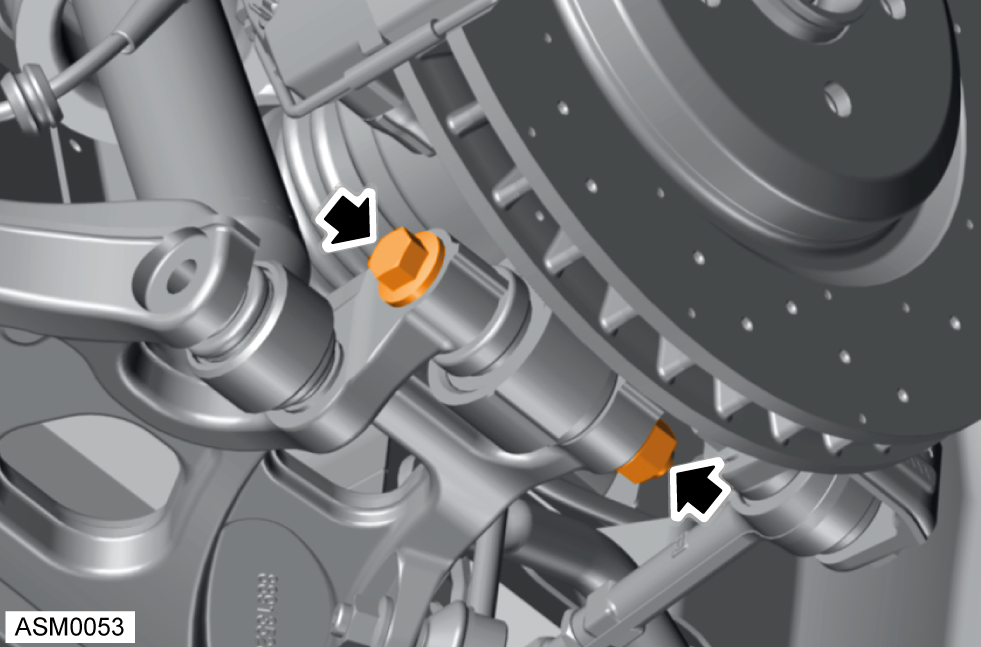
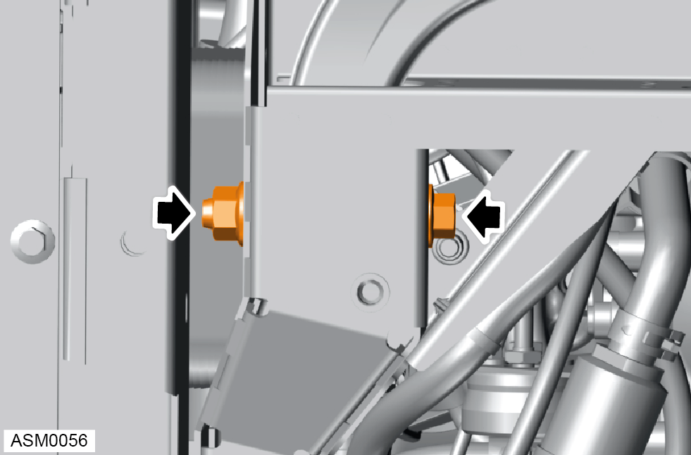
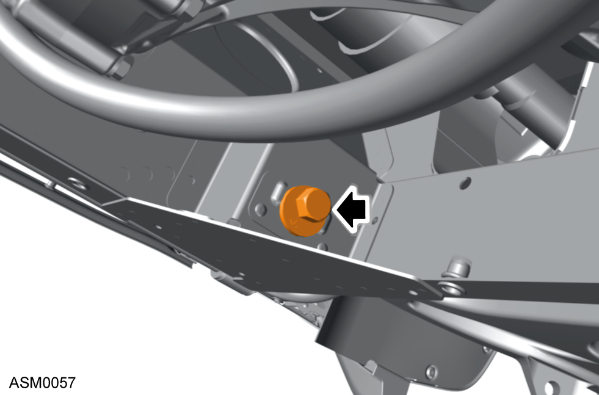
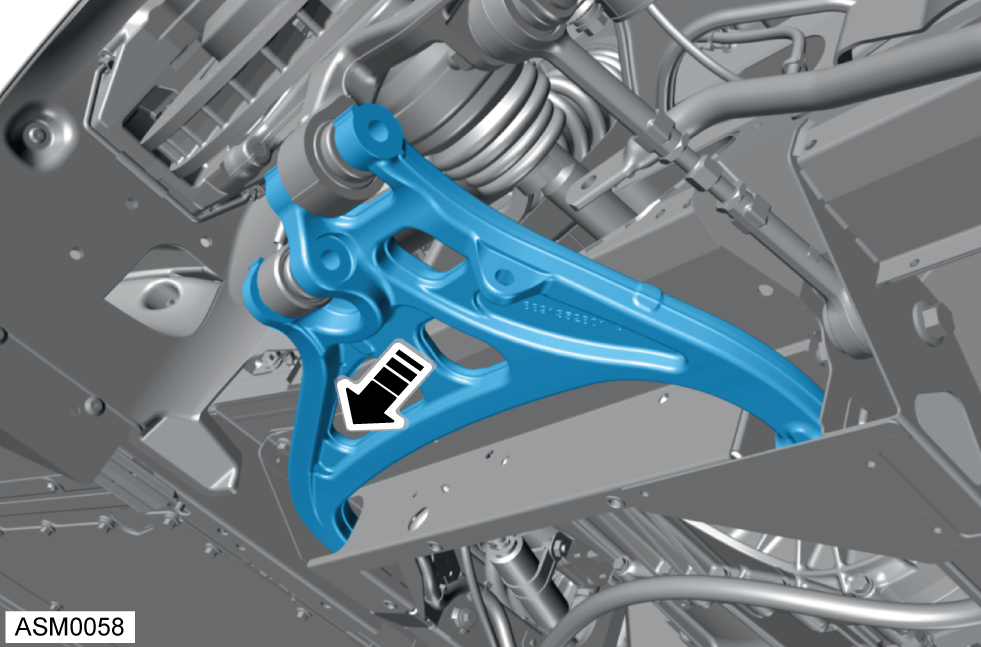

Lower Wishbone - Rear - Left Side
Print
Operation Code: 31.03.11-02
Removal
- Remove rear undertray. Refer to procedure.
- Remove rear wheel. Refer to procedure.

- Remove M12 nut securing anti-roll bar link to lower wishbone. Discard nut. Torque 36 Nm.
NOTE: Insert 5mm hex bit into ball pin stud to prevent anti roll bar drop link ball joint from spinning during removal / installation.

- Remove anti-roll bar link from lower wishbone.

- Remove M6x12 bolt securing cable bracket to lower wishbone. Torque 10 Nm.

- Remove cable bracket from lower wishbone.

- Remove M14x105 bolt and securing damper to lower wishbone. Discard nut. Torque 190 Nm.

- Remove M14x125 bolt securing hub to lower wishbone. Discard nut. Torque 190 Nm.

- Remove M12x85 bolt securing front of lower wishbone to vehicle. Discard nut. Torque 105 Nm.

- Remove M12x95 bolt securing rear of lower wishbone to vehicle. Discard nut. Torque 105 Nm.
NOTE: Always record quantity and fitted position of washers.

- Remove lower wishbone.
Installation
- Installation is the reverse of removal procedure except for the following:
- Renew all torque nut fixings that have been removed during removal procedure.
- Only torque tighten wishbone bolts once vehicle is in the normal ride height position.
- Perform a rear suspension geometry inspection and adjustment. Refer to procedure.